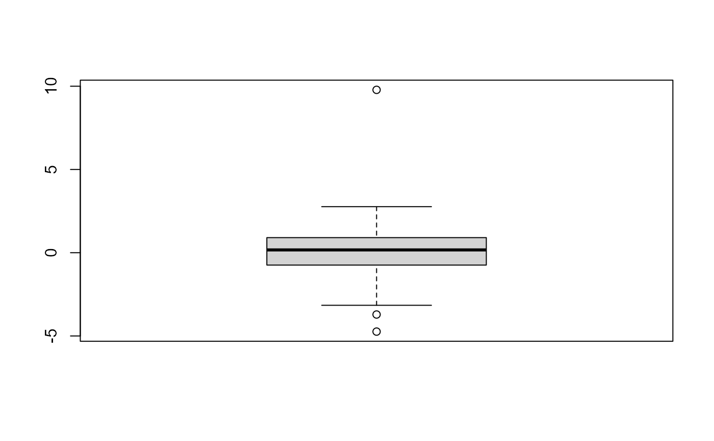

Identify potential outliers in a numeric vector.
outliers(x, method = c("boxplot", "stdev"), coef = NULL)
| x | Numeric vector. |
|---|---|
| method | Method for identifying outliers. Defaults to "boxplot". Other possibility is "stdev". |
| coef | Multiplier for determining how extreme a value must be to be flagged as a potential outlier. Defaults to 1.5 for boxplot method, indicating 1.5 times the inter-quartile range from the median, and to 2 for stdev method, indicating 2 times the standard deviation from the mean. |
Logical vector the same length as x, indicating for each value in x whether it is a possible outlier as determined by the specified method and coefficient.
Takes a numeric vector, x, and returns a corresponding
logical vector the same length as x. Values of TRUE in return
vector indicate corresponding value in x may be an
outlier. Handy for use with dplyr::mutate().
If method is boxplot, then values more than coef times
the IQR above the 3rd quartile, or more than coef times
the IQR below the 1st quartile are flagged as possible
outliers.
If method is stdev, then values more than coef standard
deviations from the mean are flagged as possible outliers.
Both methods are rather simple-minded ways of IDing possible outliers in the context of a presumed normal distribution.
TODO: Look around for inspiration as to other approaches, e.g.,
Leys, C., Ley, C., Klein, O., Bernard, P., & Licata, L. (2013). Detecting outliers: Do not use standard deviation around the mean, use absolute deviation around the median. Journal of Experimental Social Psychology, 49(4), 764-766. doi:10.1016/j.jesp.2013.03.013
Code for MAD based outlier detection at: https://raw.githubusercontent.com/hauselin/Rcode/master/detectOutliers.R
David Braze davebraze@gmail.com
x[outliers(x)]#> 25% 75% #> -3.118453 3.247265#> [1] -3.158160 9.782400 -3.712073 -4.738422